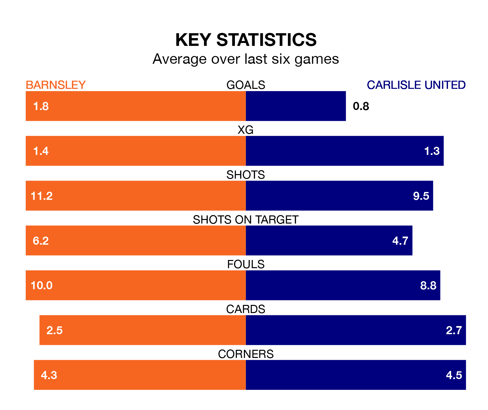

Barnsley are heavy favourites to keep all three points at home in Tuesday's late kick-off against Carlisle United.
The Tykes, who sit sixth in EFL League One with 25 games played, are priced at 1.4 to seal victory at Oakwell.
Sitting 17 places and 26 points behind them in the table, Carlisle are 5.0 to win with *Betting Company*, while the draw is at 4.2.
With 48 goals in 25 games so far this season, Barnsley are the league's third-highest scorers with 1.9 goals per game. And they are conceding fewer than average, letting in 29 goals at a rate of 1.2 per game.
Carlisle, meanwhile, are below average scorers, with 0.8 goals per game, compared to a league average of 1.3. They have conceded 1.5 goals per game.
In Devante Cole, the Tykes have one of the league's sharpest shooters so far this season. He has notched 15 goals in 25 appearances, to sit second in the scoring charts.
His goal rate of one every 137 minutes is much quicker than that of Jordan Gibson, United's top scorer with a goal every 318 minutes, and a total of six goals in 26 games.
The hosts are in reasonable form in EFL League One, with three wins and three draws from their last six games.
With a win and a draw over that period, the away side's form is much worse – they have taken four points from 18, compared to Barnsley's 12.
Barnsley's last match was on Saturday, a 2-1 win against Bristol Rovers, with Cole and Corey O'Keeffe getting the goals for the Tykes.
Carlisle lost 3-1 against Oxford United last time out, also on Saturday, with Alfie John Mccalmont on the scoresheet.
Tuesday's match will be refereed by Will Finnie, who has taken charge of 11 EFL League One games so far this season, issuing one red card and booking 42 players. He has awarded one penalty.
He is yet to oversee a match featuring either Barnsley or Carlisle this season.
Updated: 14:53 (UTC), 16/01/24